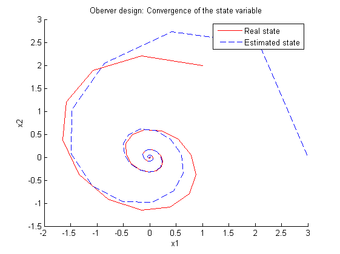
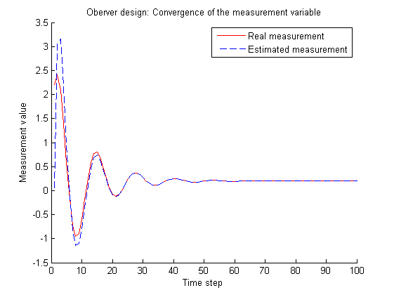
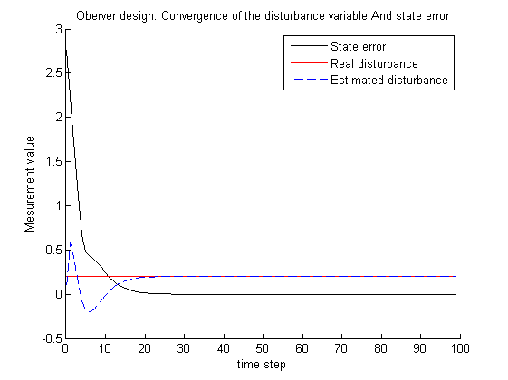
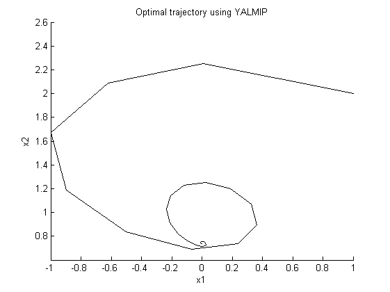
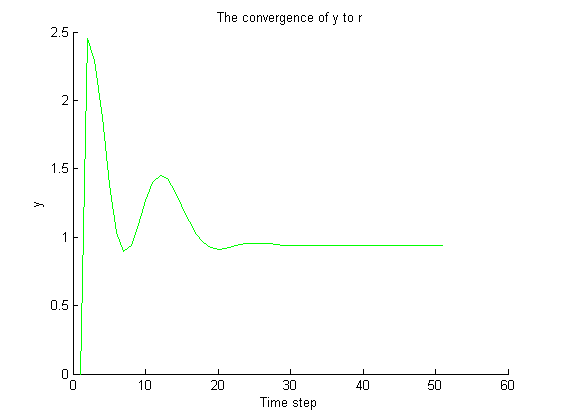
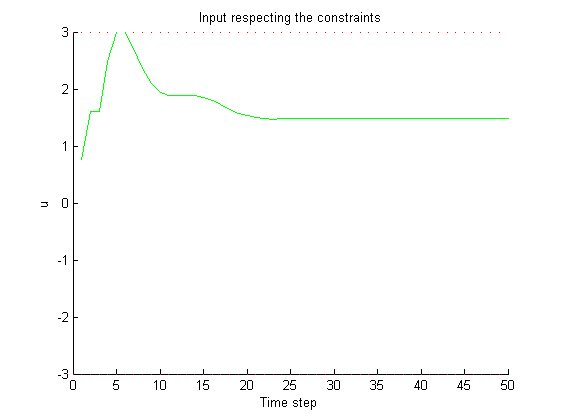

Contents
clc;
clear all;
close all;
warning('off');
------------ EXERCISE 1 ------------- %%
A=[0.7115 -0.4345;
0.4345 0.8853];
B=[0.2173;
0.0573];
Bd=[0;0];
C=[0 1];
Cd=1;
x0=[1;2];
x0_=[3;0];
d0=0.2;
d0_=0;
u=0;
pN = 100;
x = zeros(2,pN);
x(:,1) = x0;
x_ = zeros(2,pN);
x_(:,1) = x0_;
errX = zeros(1,pN);
errX(1)=sqrt((x0(1)-x0_(1))*(x0(1)-x0_(1))+(x0(2)-x0_(2))*(x0(2)-x0_(2)));
d = d0;
d_ = zeros(1,pN);
d_(1) = d0_;
y = zeros(1,pN);
y_ = zeros(1,pN);
L = (place([A Bd; 0 0 1]', -[C'; Cd],[0.5;0.6;0.7]))';
Lx = L(1:2);
Ld = L(3);
for i=1:pN-1
y(i) = C*x(:,i)+Cd*d;
y_(i) = C*x_(:,i)+Cd*d_(i);
x_(:,i+1) = [A Bd]*[x_(:,i);d_(i)] + B*u + Lx*(C*x_(:,i)+Cd*d_(i)-y(i));
d_(i+1) = [0 0 1]*[x_(:,i);d_(i)] + Ld*(C*x_(:,i)+Cd*d_(:,i)-y(i));
x(:,i+1) = A*x(:,i);
errX(i+1)=sqrt((x(1,i+1)-x_(1,i+1))*(x(1,i+1)-x_(1,i+1))+(x(2,i+1)-x_(2,i+1))*(x(2,i+1)-x_(2,i+1)));
end;
y(pN) = C*x(:,pN)+Cd*d;
y_(pN) = C*x_(:,pN)+Cd*d_(pN);
figure();
hold on;
plot(x(1,:),x(2,:),'r');
plot(x_(1,:),x_(2,:),'b--');
xlabel('x1');
ylabel('x2');
legend('Real state','Estimated state');
title('Oberver design: Convergence of the state variable');
figure();
hold on;
plot(y(:),'r');
plot(y_(:),'b--');
xlabel('Time step');
ylabel('Measurement value');
legend('Real measurement','Estimated measurement');
title('Oberver design: Convergence of the measurement variable');
timeStep=linspace(0,pN-1,pN);
figure;
hold on;
plot(timeStep,errX,'k');
plot(timeStep,d*ones(1,pN),'r');
plot(timeStep,d_,'b--');
xlabel('time step');
ylabel('Mesurement value');
legend('State error','Real disturbance','Estimated disturbance');
title('Oberver design: Convergence of the disturbance variable And state error');
  
------------ EXERCISE 2 ------------- %%
u=0;
ku = [3; 3];
Hu = [1; -1];
d_ = d;
Rs = 1;
r = 1;
xs = sdpvar(2,1);
us = sdpvar(1,1);
con = [[eye(2)-A -B; C 0]*[xs; us]==[Bd*d_; r-Cd*d_], Hu*us<=ku];
obj = us*Rs*us;
ops = sdpsettings('solver','quadprog','verbose',0);
diagnosis = solvesdp(con, obj, ops);
xs = double(xs)
us = double(us)
xs =
0.0002
0.8000
us =
1.5999
------------ EXERCISE 3 ------------- %%
r = 1;
Q = eye(2);
R = 1;
N = 5;
P = dlyap(A,Q);
pN3 = 50;
x = zeros(2,pN3);
x(:,1) = x0;
x_ = zeros(2,pN3);
d = d0;
d_ = zeros(1,pN3);
y = zeros(1,pN3);
u = zeros(1,pN3);
opsMPC = sdpsettings('solver','sedumi','verbose',0);
delZMPC = sdpvar(2,N,'full');
delUMPC = sdpvar(1,N-1,'full');
x0MPC = sdpvar(2,1,'full');
objMPC = 0;
for i = 1:N-1
objMPC = objMPC + delZMPC(:,i)'*Q*delZMPC(:,i) + delUMPC(:,i)'*R*delUMPC(:,i);
end
objMPC = objMPC + delZMPC(:,N)'*P*delZMPC(:,N);
for i=1:pN3
if i == 1
x_(:,i) = x0_;
d_(i) = d0_;
y_(i) = C*x_(:,i)+Cd*d_(i);
else
x_(:,i) = [A Bd]*[x_(:,i-1);d_(i-1)] + B*u(i-1) + Lx*(C*x_(:,i-1)+Cd*d_(i-1)-y(i-1));
d_(i) = [0 0 1]*[x_(:,i-1);d_(i-1)] + Ld*(C*x_(:,i-1)+Cd*d_(:,i-1)-y(i-1));
y_(i) = C*x_(:,i)+Cd*d_(i);
end
xs = sdpvar(2,1);
us = sdpvar(1,1);
con = [[eye(2)-A -B; C 0]*[xs; us]==[Bd*d_(i); r-Cd*d_(i)], Hu*us<=ku];
obj = us*Rs*us;
ops = sdpsettings('solver','quadprog','verbose',0);
con = [[eye(2)-A -B; C 0]*[xs; us]==[Bd*d_(i); r-Cd*d_(i)], Hu*us<=ku];
sol = solvesdp(con, obj, ops);
if sol.problem == 1
brake;
end
xs = double(xs);
us = double(us);
delX_ = x_(:,i)-xs;
conMPC = [];
conMPC = [conMPC, delZMPC(:,1) == x0MPC];
for j = 1:N-1
conMPC = [conMPC, delZMPC(:,j+1) == A*delZMPC(:,j) + B*delUMPC(:,j)];
conMPC = [conMPC, Hu*delUMPC(:,j) <= ku - Hu*us];
end
conMPC = [conMPC, isreal(delZMPC(:,N))];
ctrl = optimizer(conMPC, objMPC, opsMPC, x0MPC, delUMPC(:,1));
[uopt,unfeasible] = ctrl{x(:,i)};
if unfeasible
disp('The initial position is unfeasible')
break;
end
u(i) = uopt+us;
if i<pN
x(:,i+1) = A*x(:,i)+B*u(i)+Bd*d;
y(i+1) = C*x(:,i+1)+Cd*d;
end
end
figure;
xlabel('x1');
ylabel('x2');
title('Optimal trajectory using YALMIP');
hold on;
plot(x(1,:),x(2,:), 'color','k');
figure;
xlabel('Time step');
ylabel('y');
title('The convergence of y to r');
hold on;
plot(y,'g');
timeStep3=linspace(0,pN3-1,pN3)
figure;
xlabel('Time step');
ylabel('u')
title('Input respecting the constraints');
hold on;
plot(timeStep3,3,'r-');
plot(timeStep3,-3,'r-');
plot(u,'g');
timeStep3 =
Columns 1 through 13
0 1 2 3 4 5 6 7 8 9 10 11 12
Columns 14 through 26
13 14 15 16 17 18 19 20 21 22 23 24 25
Columns 27 through 39
26 27 28 29 30 31 32 33 34 35 36 37 38
Columns 40 through 50
39 40 41 42 43 44 45 46 47 48 49
  